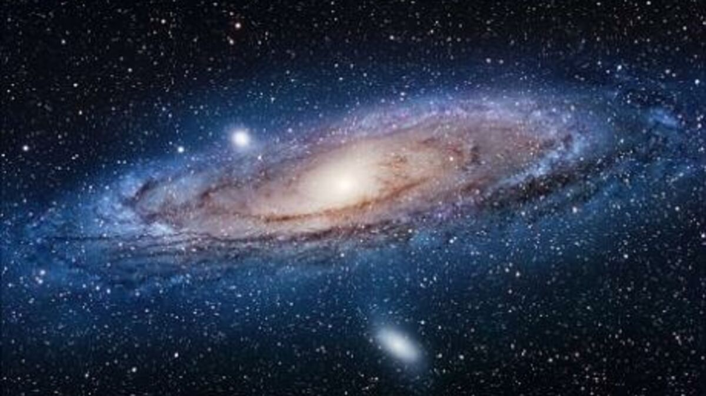

Les Galaxies

Les galaxies sont des systèmes tentaculaires composés de poussières, de gaz, de matière
noire et d'un million à un billion d'étoiles, le tout maintenu par la gravité. Presque
toutes les grandes galaxies compteraient également en leur centre des trous noirs
supermassifs. Dans la nôtre, la Voie lactée, le Soleil n'est qu'une étoile
parmi 100 à 400 milliards d'autres en orbite autour de Sagittarius A*,
un trou noir supermassif d'une masse équivalente à quatre millions de soleils.
Plus nous portons loin notre regard dans l'univers, plus nous voyons de galaxies.
Une étude parue en 2016 estime que l'univers observable contiendrait deux billions de
galaxies, soit deux millions de millions ou en écriture scientifique, 1012. Aussi
éloignés soient-ils, certains de ces systèmes ont des points communs avec notre Voie
lactée alors que d'autres lui ressemblent moins.